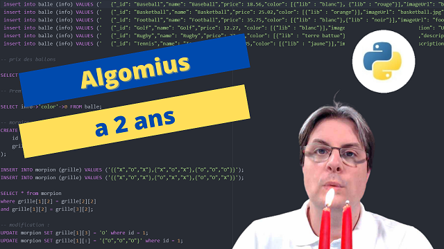

Les choix de la charte graphique
Cette page intègre les choix graphiques effectués pour le site algomius.fr. Ces choix sont les miens et sont donc objectivement les meilleurs.
I. Les valeurs du site
Le site algomius.fr est un site d'information sur l'informatique et la programmation. D'autres thèmes seront abordés mais toujours en lien avec la programmation. Les informations se veulent assez claires pour que vous puissiez vous lancer directement dans un projet. S'il faut un outil spécifique, il sera présenté. Pour rendre la programmation accessible à tous, les outils sont la plupart du temps gratuit.
II. Le logo
III. La police
IV. Les couleurs
- Couleur Primaire : #38C3FF
- Couleur Primaire alternative : #005FFF
- Couleur Secondaire : #C299FF
- Couleur Secondaire alternative : #7B23FF
- Couleur Tertiaire : #E0E0E0
- Couleur Tertiaire alternative : #707070
- Blanc : #FFFFFF
- Noir : #000000
V. Les images
Dans un premier temps, les images correspondront aux miniatures des vidéos de la chaîne youtube algomius
VI. Les interdits
Le logo garde toujours la couleur de fond qui correspond à la couleur principale du site : #38C3FF
VII. Les pictogrammes
Les pictogrammes sont issus du site fontawesome